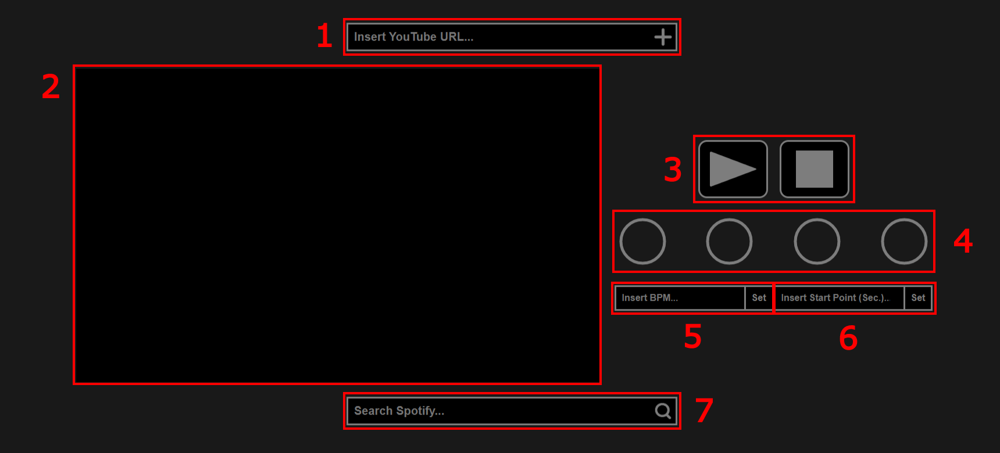

About

1. YouTube Search Bar
2. Video Player
Where the YouTube video will appear.
3. Video Player Controls
The Play Button on the left will play the video and start the metronome.
The Stop Button on the right will stop the video and the metronome.
4. Metronome
When started, the metronome's circles will be filled in one at a time, and a sound will play.
The first beat will play a higher pitched sound than the others.
5. BPM Box
Inserting a number and then pressing Set will set the BPM of the metronome.
The default BPM is 120.
There is no limit to how high you can set the BPM, so be careful!
6. Start Point Box
Inserting a number and then pressing Set will set where the video starts when you start the metronome.
The default starting point is at 0 seconds.
7. Spotify Search Bar
Inserting a term and then pressing the Search button will search Spotify.
The first five results are displayed, displaying the song title, artist, and BPM.
You can also search by song artist.
You can not add results from the Spotify search bar to the Video Player.